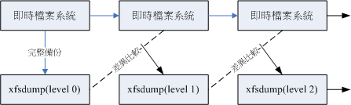

8.4 XFS 文件系统的备份与还原
使用 tar 通常是针对目录树系统来进行备份的工作，那么如果想要针对整个文件系统来进行备份与还原呢？由于 CentOS 7 已经使用 XFS 文件系统作为默认值，所以那个好用的 xfsdump 与 xfsrestore 两个工具对 CentOS 7 来说，就是挺重要的工具软件了。下面就让我们来谈一谈这个指令的用法吧！
8.4.1 XFS 文件系统备份 xfsdump
其实 xfsdump 的功能颇强！他除了可以进行文件系统的完整备份 （full backup） 之外，还可以进行累积备份 （Incremental backup） 喔！ 啥是累积备份呢？这么说好了，假设你的 /home 是独立的一个文件系统，那你在第一次使用 xfsdump 进行完整备份后，等过一段时间的文件系统自然运行后， 你再进行第二次 xfsdump 时，就可以选择累积备份了！此时新备份的数据只会记录与第一次完整备份所有差异的文件而已。 看不懂吗？没关系！我们用一张简图来说明。
图8.4.1、xfsdump 运行时，完整备份与累积备份示意图
如上图所示，上方的“实时文件系统”是一直随着时间而变化的数据，例如在 /home 里面的文件数据会一直变化一样。 而下面的方块则是 xfsdump 备份起来的数据，第一次备份一定是完整备份，完整备份在 xfsdump 当中被定义为 level 0 喔！等到第二次备份时，/home 文件系统内的数据已经与 level 0 不一样了，而 level 1 仅只是比较目前的文件系统与 level 0 之间的差异后，备份有变化过的文件而已。至于 level 2 则是与 level 1 进行比较啦！这样了解呼？至于各个 level 的纪录档则放置于 /var/lib/xfsdump/inventory 中。
另外，使用 xfsdump 时，请注意下面的限制喔：
- xfsdump 不支持没有挂载的文件系统备份！所以只能备份已挂载的！
- xfsdump 必须使用 root 的权限才能操作 （涉及文件系统的关系）
- xfsdump 只能备份 XFS 文件系统啊！
- xfsdump 备份下来的数据 （文件或储存媒体） 只能让 xfsrestore 解析
- xfsdump 是通过文件系统的 UUID 来分辨各个备份文件的，因此不能备份两个具有相同 UUID 的文件系统喔！
xfsdump 的选项虽然非常的繁复，不过如果只是想要简单的操作时，您只要记得下面的几个选项就很够用了！
[root@study ~]# xfsdump [-L S_label] [-M M_label] [-l #] [-f 备份文件] 待备份数据
[root@study ~]# xfsdump -I
选项与参数：
-L ：xfsdump 会纪录每次备份的 session 标头，这里可以填写针对此文件系统的简易说明
-M ：xfsdump 可以纪录储存媒体的标头，这里可以填写此媒体的简易说明
-l ：是 L 的小写，就是指定等级～有 0~9 共 10 个等级喔！ （默认为 0，即完整备份）
-f ：有点类似 tar 啦！后面接产生的文件，亦可接例如 /dev/st0 设备文件名或其他一般文件文件名等
-I ：从 /var/lib/xfsdump/inventory 列出目前备份的信息状态
特别注意， xfsdump 默认仅支持文件系统的备份，并不支持特定目录的备份～所以你不能用 xfsdump 去备份 /etc ！ 因为 /etc 从来就不是一个独立的文件系统！注意！注意！
- 用 xfsdump 备份完整的文件系统
现在就让我们来做几个范例吧！假设你跟鸟哥一样有将 /boot 分区出自己的文件系统，要整个文件系统备份可以这样作：
# 1\. 先确定 /boot 是独立的文件系统喔！
[root@study ~]# df -h /boot
Filesystem Size Used Avail Use% Mounted on
/dev/vda2 1014M 131M 884M 13% /boot # 挂载 /boot 的是 /dev/vda 设备！
# 看！确实是独立的文件系统喔！ /boot 是挂载点！
# 2\. 将完整备份的文件名记录成为 /srv/boot.dump ：
[root@study ~]# xfsdump -l 0 -L boot_all -M boot_all -f /srv/boot.dump /boot
xfsdump -l 0 -L boot_all -M boot_all -f /srv/boot.dump /boot
xfsdump: using file dump （drive_simple） strategy
xfsdump: version 3.1.4 （dump format 3.0） - type ^C for status and control
xfsdump: level 0 dump of study.centos.vbird:/boot # 开始备份本机/boot系统
xfsdump: dump date: Wed Jul 1 18:43:04 2015 # 备份的时间
xfsdump: session id: 418b563f-26fa-4c9b-98b7-6f57ea0163b1 # 这次dump的ID
xfsdump: session label: "boot_all" # 简单给予一个名字记忆
xfsdump: ino map phase 1: constructing initial dump list # 开始备份程序
xfsdump: ino map phase 2: skipping （no pruning necessary）
xfsdump: ino map phase 3: skipping （only one dump stream）
xfsdump: ino map construction complete
xfsdump: estimated dump size: 103188992 Bytes
xfsdump: creating dump session media file 0 （media 0, file 0）
xfsdump: dumping ino map
xfsdump: dumping directories
xfsdump: dumping non-directory files
xfsdump: ending media file
xfsdump: media file size 102872168 Bytes
xfsdump: dump size （non-dir files） : 102637296 Bytes
xfsdump: dump complete: 1 seconds elapsed
xfsdump: Dump Summary:
xfsdump: stream 0 /srv/boot.dump OK （success）
xfsdump: Dump Status: SUCCESS
# 在指令的下达方面，你也可以不加 -L 及 -M 的，只是那就会进入互动模式，要求你 enter！
# 而执行 xfsdump 的过程中会出现如上的一些讯息，您可以自行仔细的观察！
[root@study ~]# ll /srv/boot.dump
-rw-r--r--. 1 root root 102872168 Jul 1 18:43 /srv/boot.dump
[root@study ~]# ll /var/lib/xfsdump/inventory
-rw-r--r--. 1 root root 5080 Jul 1 18:43 506425d2-396a-433d-9968-9b200db0c17c.StObj
-rw-r--r--. 1 root root 312 Jul 1 18:43 94ac5f77-cb8a-495e-a65b-2ef7442b837c.InvIndex
-rw-r--r--. 1 root root 576 Jul 1 18:43 fstab
# 使用了 xfsdump 之后才会有上述 /var/lib/xfsdump/inventory 内的文件产生喔！
这样很简单的就创建起来 /srv/boot.dump 文件，该文件将整个 /boot/ 文件系统都备份下来了！ 并且将备份的相关信息 （文件系统/时间/session ID等等） 写入 /var/lib/xfsdump/inventory 中，准备让下次备份时可以作为一个参考依据。 现在让我们来进行一个测试，检查看看能否真的创建 level 1 的备份呢？
- 用 xfsdump 进行累积备份 （Incremental backups）
你一定得要进行过完整备份后 （-l 0） 才能够继续有其他累积备份 （-l 1~9） 的能耐！所以，请确定上面的实做已经完成！ 接下来让我们来搞一搞累积备份功能吧！
# 0\. 看一下有没有任何文件系统被 xfsdump 过的数据？
[root@study ~]# xfsdump -I
file system 0:
fs id: 94ac5f77-cb8a-495e-a65b-2ef7442b837c
session 0:
mount point: study.centos.vbird:/boot
device: study.centos.vbird:/dev/vda2
time: Wed Jul 1 18:43:04 2015
session label: "boot_all"
session id: 418b563f-26fa-4c9b-98b7-6f57ea0163b1
level: 0
resumed: NO
subtree: NO
streams: 1
stream 0:
pathname: /srv/boot.dump
start: ino 132 offset 0
end: ino 2138243 offset 0
interrupted: NO
media files: 1
media file 0:
mfile index: 0
mfile type: data
mfile size: 102872168
mfile start: ino 132 offset 0
mfile end: ino 2138243 offset 0
media label: "boot_all"
media id: a6168ea6-1ca8-44c1-8d88-95c863202eab
xfsdump: Dump Status: SUCCESS
# 我们可以看到目前仅有一个 session 0 的备份数据而已！而且是 level 0 喔！
# 1\. 先恶搞一下，创建一个大约 10 MB 的文件在 /boot 内：
[root@study ~]# dd if=/dev/zero of=/boot/testing.img bs=1M count=10
10+0 records in
10+0 records out
10485760 Bytes （10 MB） copied, 0.166128 seconds, 63.1 MB/s
# 2\. 开始创建差异备份文件，此时我们使用 level 1 吧：
[root@study ~]# xfsdump -l 1 -L boot_2 -M boot_2 -f /srv/boot.dump1 /boot
....（中间省略）....
[root@study ~]# ll /srv/boot*
-rw-r--r--. 1 root root 102872168 Jul 1 18:43 /srv/boot.dump
-rw-r--r--. 1 root root 10510952 Jul 1 18:46 /srv/boot.dump1
# 看看文件大小，岂不是就是刚刚我们所创建的那个大文件的容量吗？ ^_^
# 3\. 最后再看一下是否有记录 level 1 备份的时间点呢？
[root@study ~]# xfsdump -I
file system 0:
fs id: 94ac5f77-cb8a-495e-a65b-2ef7442b837c
session 0:
mount point: study.centos.vbird:/boot
device: study.centos.vbird:/dev/vda2
....（中间省略）....
session 1:
mount point: study.centos.vbird:/boot
device: study.centos.vbird:/dev/vda2
time: Wed Jul 1 18:46:21 2015
session label: "boot_2"
session id: c71d1d41-b3bb-48ee-bed6-d77c939c5ee8
level: 1
resumed: NO
subtree: NO
streams: 1
stream 0:
pathname: /srv/boot.dump1
start: ino 455518 offset 0
....（下面省略）....
通过这个简单的方式，我们就能够仅备份差异文件的部分啰！
8.4.2 XFS 文件系统还原 xfsrestore
备份文件就是在急用时可以回复系统的重要数据，所以有备份当然就得要学学如何复原了！ xfsdump 的复原使用的是 xfsrestore 这个指令！这个指令的选项也非常的多～您可以自行 man xfsrestore 瞧瞧！ 鸟哥在这里仅作个简单的介绍啰！
[root@study ~]# xfsrestore -I <==用来察看备份文件数据
[root@study ~]# xfsrestore [-f 备份文件] [-L S_label] [-s] 待复原目录 <==单一文件全系统复原
[root@study ~]# xfsrestore [-f 备份文件] -r 待复原目录 <==通过累积备份文件来复原系统
[root@study ~]# xfsrestore [-f 备份文件] -i 待复原目录 <==进入互动模式
选项与参数：
-I ：跟 xfsdump 相同的输出！可查询备份数据，包括 Label 名称与备份时间等
-f ：后面接的就是备份文件！企业界很有可能会接 /dev/st0 等磁带机！我们这里接文件名！
-L ：就是 Session 的 Label name 喔！可用 -I 查询到的数据，在这个选项后输入！
-s ：需要接某特定目录，亦即仅复原某一个文件或目录之意！
-r ：如果是用文件来储存备份数据，那这个就不需要使用。如果是一个磁带内有多个文件，
需要这东西来达成累积复原
-i ：进入互动模式，进阶管理员使用的！一般我们不太需要操作它！
- 用 xfsrestore 观察 xfsdump 后的备份数据内容
要找出 xfsdump 的内容就使用 xfsrestore -I 来查阅即可！不需要加任何参数！因为 xfsdump 与 xfsrestore 都会到 /var/lib/xfsdump/inventory/ 里面去捞数据来显示的！因此两者输出是相同的！
[root@study ~]# xfsrestore -I
file system 0:
fs id: 94ac5f77-cb8a-495e-a65b-2ef7442b837c
session 0:
mount point: study.centos.vbird:/boot
device: study.centos.vbird:/dev/vda2
time: Wed Jul 1 18:43:04 2015
session label: "boot_all"
session id: 418b563f-26fa-4c9b-98b7-6f57ea0163b1
level: 0
pathname: /srv/boot.dump
mfile size: 102872168
media label: "boot_all"
session 1:
mount point: study.centos.vbird:/boot
device: study.centos.vbird:/dev/vda2
time: Wed Jul 1 18:46:21 2015
session label: "boot_2"
session id: c71d1d41-b3bb-48ee-bed6-d77c939c5ee8
level: 1
pathname: /srv/boot.dump1
mfile size: 10510952
media label: "boot_2"
xfsrestore: Restore Status: SUCCESS
# 鸟哥已经将不重要的项目删除了，所以上面的输出是经过经简化的结果！
# 我们可以看到这个文件系统是 /boot 载点，然后有两个备份，一个 level 0 一个 level 1。
# 也看到这两个备份的数据他的内容大小！更重要的，就是那个 session label 喔！
这个查询重点是找出到底哪个文件是哪个挂载点？而该备份文件又是什么 level 等等的！接下来，让我们实做一下从备份还原系统吧！
- 简单复原 level 0 的文件系统
先来处理一个简单的任务，就是将 /boot 整个复原到最原本的状态～你该如何处理？其实很简单，我们只要知道想要被复原的那个文件， 以及该文件的 session label name，就可以复原啦！我们从上面的观察已经知道 level 0 的 session label 是“boot_all”啰！那整个流程是这样：
# 1\. 直接将数据给它覆盖回去即可！
[root@study ~]# xfsrestore -f /srv/boot.dump -L boot_all /boot
xfsrestore: using file dump （drive_simple） strategy
xfsrestore: version 3.1.4 （dump format 3.0） - type ^C for status and control
xfsrestore: using online session inventory
xfsrestore: searching media for directory dump
xfsrestore: examining media file 0
xfsrestore: reading directories
xfsrestore: 8 directories and 327 entries processed
xfsrestore: directory post-processing
xfsrestore: restoring non-directory files
xfsrestore: restore complete: 1 seconds elapsed
xfsrestore: Restore Summary:
xfsrestore: stream 0 /srv/boot.dump OK （success） # 是否是正确的文件啊？
xfsrestore: Restore Status: SUCCESS
# 2\. 将备份数据在 /tmp/boot 下面解开！
[root@study ~]# mkdir /tmp/boot
[root@study ~]# xfsrestore -f /srv/boot.dump -L boot_all /tmp/boot
[root@study ~]# du -sm /boot /tmp/boot
109 /boot
99 /tmp/boot
# 咦！两者怎么大小不一致呢？没关系！我们来检查看看！
[root@study ~]# diff -r /boot /tmp/boot
Only in /boot: testing.img
# 看吧！原来是 /boot 我们有增加过一个文件啦！
因为原本 /boot 里面的东西我们没有删除，直接复原的结果就是：“同名的文件会被覆盖，其他系统内新的文件会被保留”喔！所以， 那个 /boot/testing.img 就会一直在里头～如果备份的目的地是新的位置，当然就只有原本备份的数据而已啊！那个 diff -r 可以比较两个目录内的文件差异！ 通过该指令我们可以找到两个目录的差异处！
# 3\. 仅复原备份文件内的 grub2 到 /tmp/boot2/ 里头去！
[root@study ~]# mkdir /tmp/boot2
[root@study ~]# xfsrestore -f /srv/boot.dump -L boot_all -s grub2 /tmp/boot2
如果只想要复原某一个目录或文件的话，直接加上“ -s 目录 ”这个选项与参数即可！相当简单好用！
- 复原累积备份数据
其实复原累积备份与复原单一文件系统相似耶！如果备份数据是由 level 0 -> level 1 -> level 2... 去进行的， 当然复原就得要相同的流程来复原！因此当我们复原了 level 0 之后，接下来当然就要复原 level 1 到系统内啊！ 我们可以前一个案例复原 /tmp/boot 的情况来继续往下处理：
# 继续复原 level 1 到 /tmp/boot 当中！
[root@study ~]# xfsrestore -f /srv/boot.dump1 /tmp/boot
- 仅还原部分文件的 xfsrestore 互动模式
刚刚的 -s 可以接部份数据来还原，但是...如果我就根本不知道备份文件里面有啥文件，那该如何选择啊？用猜的喔？ 又如果要复原的文件数量太多时，用 -s 似乎也是笨笨的～那怎办？有没有比较好的方式呢？有的，就通过 -i 这个互动界面吧！ 举例来说，我们想要知道 level 0 的备份数据里面有哪些东西，然后再少量的还原回来的话！
# 1\. 先进入备份文件内，准备找出需要备份的文件名数据，同时预计还原到 /tmp/boot3 当中！
[root@study ~]# mkdir /tmp/boot3
[root@study ~]# xfsrestore -f /srv/boot.dump -i /tmp/boot3
========================== subtree selection dialog ==========================
the following commands are available:
pwd
ls [ <path> ]
cd [ <path> ]
add [ <path> ] # 可以加入复原文件列表中
delete [ <path> ] # 从复原列表拿掉文件名！并非删除喔！
extract # 开始复原动作！
quit
help
-> ls
455517 initramfs-3.10.0-229.el7.x86_64kdump.img
138 initramfs-3.10.0-229.el7.x86_64.img
141 initrd-plymouth.img
140 vmlinuz-0-rescue-309eb890d09f440681f596543d95ec7a
139 initramfs-0-rescue-309eb890d09f440681f596543d95ec7a.img
137 vmlinuz-3.10.0-229.el7.x86_64
136 symvers-3.10.0-229.el7.x86_64.gz
135 config-3.10.0-229.el7.x86_64
134 System.map-3.10.0-229.el7.x86_64
133 .vmlinuz-3.10.0-229.el7.x86_64.hmac
1048704 grub2/
131 grub/
-> add grub
-> add grub2
-> add config-3.10.0-229.el7.x86_64
-> extract
[root@study ~]# ls -l /tmp/boot3
-rw-r--r--. 1 root root 123838 Mar 6 19:45 config-3.10.0-229.el7.x86_64
drwxr-xr-x. 2 root root 26 May 4 17:52 grub
drwxr-xr-x. 6 root root 104 Jun 25 00:02 grub2
# 就只会有 3 个文件名被复原，当然，如果文件名是目录，那下面的子文件当然也会被还原回来的！
事实上，这个 -i 是很有帮助的一个项目！可以从备份文件里面找出你所需要的数据来复原！相当有趣！当然啦， 如果你已经知道文件名，使用 -s 不需要进入备份文件就能够处理掉这部份了！